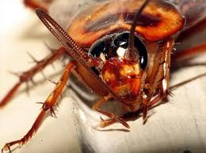

Carlos Alberto De Jesus Vasconcelos
Av. André Araújo 1423, Condominio Reserva Morada, Torre 2, Aleixo - Manaus, AM – Brasil
Nascimento: 30 de agosto de 2000
Celular: +55 92 98109-9688
E-mail: carlosalbertodejesusvasconcelo@gmail.com
Ensino Fundamental I
IDR – Instituto Denizard Rivail
Manaus, AM – Brasil
2007 – 2011
Ensino Fundamental II
CEMETRO – Centro Metropolitano De Ensino
Manaus, AM – Brasil
2013 – 2016
Idiomas (spoken/written/reading)
Inglês: (Intermediário/Intermediário/Intermediário)
Espanhol: (Intermediário/Intermediário/Intermediário)
Português: Nativo
Maior medo em vida
Por que tem esse medo?
Para ser sincero, não sei dizer o porquê, eu sumplesmente não posso ver uma barata pois, como reação espontânea, começo a entrar em pânico. Teve uma vez, não lembro o ano, em que uma barata apareçeu em sala de aula, quando eu ví, dei um grito e fui para o mais longe dela, quando a situação se acalmou, todos olharam pra mim com uma cara de estranheza e eu só fingi que nada aconteceu.
Descreva o dia que teve mais Sorte na Vida
No 1º ano do Ensino Médio, no dia dos professores, havia batido a campa para a saída, eu estava passando pelo portão de ferro por qual todo mundo entra e sai, quando eu avistei um caminhão de gás parado e alguns alunos atravessando a rua após as escadas que levam a venida principal, no dia eu pensei que conseguria chegar a tempo dos outros alunos para atravessar junto com eles, então resolvi sair correndo e também subi correndo as escadas, mas, quando eu estava terminando de subir as escadas, o caminhão começou a andar, e eu continuei correndo, quando cheguei no topo, eu não parei, o caminhão deu uma freada brusca e quase fui atropelado, mas não foi só isso, no sentido de quem vem pra bola da suframa vinha um carro em baixa velocidade e quando ele me viu na divisa dos sntidos, ele também deu uma freada brusca e eu quase ía sendo atropelado de novo. Qando eu atravessei a avenida principal, TODOS que estavam na parada de ônibus me olharam com cara de susto e no dia seguine, após a aula, minha mãe foi chamada na fundação para a corcenadora conversar sobre o caso e minha avó materna veio de brinde, e depois desse dia alguns professores começaram a me zuar por conta desse ocorrido, mas o que importa é que eu estou vivo até hoje e continuo o mesmo de sempre.
Informe algumas músicas favoritas suas
Em relação a FMM, Por que escolheu o curso de Informática?
Pois é o unico curso que, na época (2017), eu sabia algumas coisas, e também porque eu gosto muito de computadores, jogos, dentre outros, por mais que a parte mais chata seja programar (no meu caso eu odeio C), mas isso é um mal que temos que levar adiante, kk.
Fique a vontade para acrescentar Informações, se preferir.
Como disse antes, gosto de jogos, a maioria do tipo hack n slash, plataforma, luta, etc. Estou afim de um Nintendo Switch, se alguém quiser me dar eu aceito, kk. gosto de passar meu tempo com os professores na fundação, por mais que a maioria dos alunos me ache um belo dum puxa saco. Sou uma pessoa bem aberta, ou seja, fallo as coisas sem censura. E se quiserem saber mais, falem comigo por telefone ou pessoalmente. Abraços, beijos, e se cuidem.